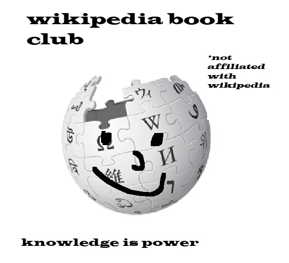

 Wikipedia Book Club
| Wikipedia Book Club | |
|---|---|
| Location | London, United Kingdom |
| Established | 2025 |
| Meetings | Once a month, Thursday 7:00 pm |
| Venue | Central London |
| Focus | Enjoying Wikipedia articles |
| Website | wikipedia-book.club |
The Wikipedia Book Club is an informal, in-person meet-up based in London. The club meets once a month to share favourite articles from Wikipedia — focusing on topics of cultural, historical, and scientific interest.
Contents
About
The club began in 2025 to explore Wikipedia articles together.
Meetings
Meetings take place once a month on Thursday at 7:00 pm. The venue is currently Central London. Each session begins with members presenting articles of their choice, followed by group discussion.
Reading list
How to join
Anyone is welcome to attend. To join or receive meeting updates, email: wikipedia.book.club.london@gmail.com.